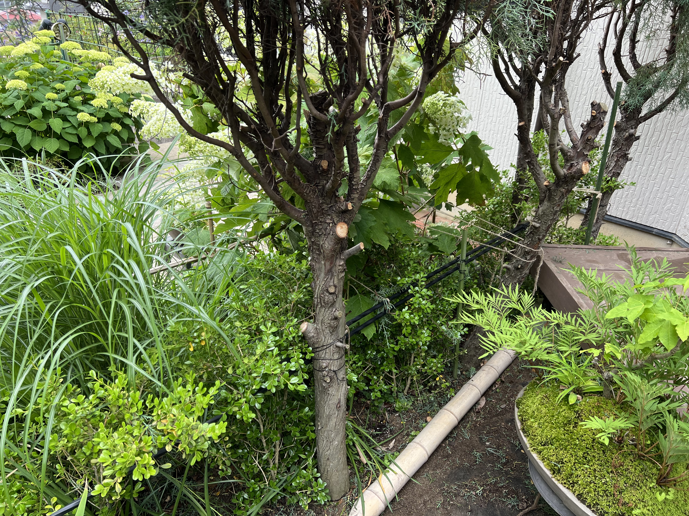
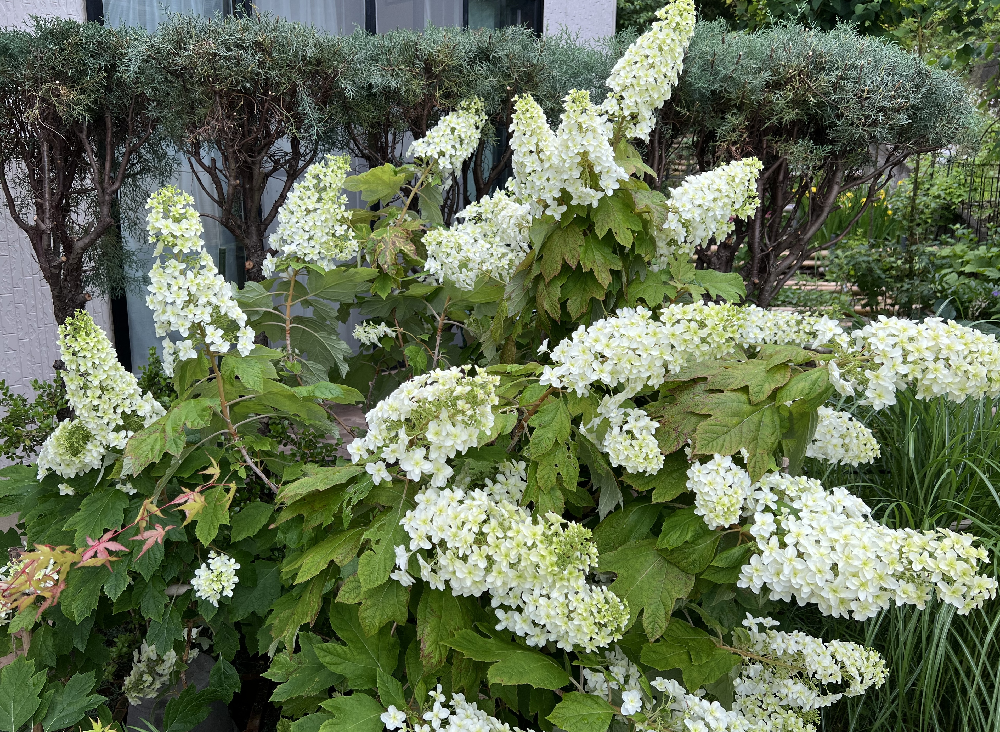

2006年、定植
選んだ品種は「ブルーアイス」、樹高80cmほどの苗です。 玄関ポーチに列植して、目隠しを兼ねた壁(垣根)を作ろうとしました。 まだバラやハーブが多かった当時、ブルーアイスの灰青色は欲しい色ナンバーワン。

2011年、放置
震災後の数年間、庭に出る気力がなくなって無剪定のまま放置。 その間に、コニファー達はワサワサと枝葉を広げて大きくなりました。
剪定の再開
庭仕事を再開すると、樹高を抑える剪定を開始。 高さ2mほどの壁状の垣根が完成しました。
そして今、限界が近づいています。 この樹高では、脚立を使わないと天辺の剪定ができません。 大きな刈り込み鋏を両手に持って、ジャキジャキ切り続ける作業は、思いの外、肩の負担が大きいのです。
2024年、決心
垣根は部屋の目隠しに必要なので、撤去はできません。 それなら、管理しやすい植物へ差し替えようと決心しました。
こうした決心には、心の痛みが伴います。 長い付き合いの木を伐採することになりますから・・。
次世代の苗へ
選んだのは「ボックスツリー」 コニファーより、ずっと管理しやすい垣根向きの常緑樹です。
苗木は樹高60cmほど。 これをコニファーの間に植えることにしました。
まずコニファーの下枝を、地際から1mの高さまで切り落としました。 そしてボックスツリーの苗木を列植。 古顔のコニファーの足元に、次世代の若手が並びました。
世代交代は、少しずつ
剪定時期になると、コニファーの樹高を抑えながら、下枝を少し落とします。 これは、育ってきたボックスツリーに、日が当たるようにするためです。

今では下枝がかなり抜けたので不格好になっていますが、カシワバアジサイが上手く隠してくれています。

ボックスツリーの生垣が、目隠しの高さになるまで、まだ何年もかかります。 コニファー達と一緒に、世代交代の日々をゆっくり過ごしています。